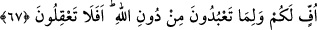

67. Size de, Allâh’ı bırakıp tapmakta olduğunuz şeylere de yuh olsun! Siz
akıllanmaz mısınız?”
“Size de, Allâh’ı bırakıp tapmakta olduğunuz şeylere de yuh olsun!” Hz. İbrahim
(a.s.) açıkça bâtıl olan bir şeyde ısrar etmelerinden daralıp sıkılarak bunları
söylemiştir.
“Üf (yuh olsun)” daralma ve sıkılmayı ifâde eder. Bir kimseden bu sözü söylediği
zaman canının sıkı olduğu anlaşılır. Bunun anlamı, ne kötü, ne fenâ demektir. Âyetteki
mânâsı ise, çirkinlik ve nâhoşluk, sizin ve Allah Teâlâ dışında taptıklarınızın üzerine
olsun, demektir
“Lâm”, yuhlananı açıklamak içindir. Yâni başkasına değil, size ve ilahlarınıza yuh
olsun, demektir. Nahiv kitaplarında ise “__WORD__”, ‘kızıyorum’ anlamında isim-fiildir.
“Siz akıllanmaz mısınız?” yâni delirdiniz mi ki yaptığınızın ne kötü bir şey olduğunu
akletmiyorsunuz?
İbn Atâ şöyle der: “Allah Teâlâ kullarını kendisine çağırdı ve “Allâh’ı bırakıp da
size hiçbir fayda ve zarar vermeyen şeylere mi tapıyorsunuz?” buyurarak başkalarına
tapınmalarını yasakladı. Senin gibi âciz bir varlığa nasıl güvenirsin de dönüş kendisine
olan, fayda ve zarar elinde olan Allâh’a güvenmezsin!
Hamdûn Kassâr şöyle demiştir: “Bir yaratılmışın başka bir yaratılmıştan yardım
umması, bir mahpusun diğerinden meded umması gibidir.”
Büyüklerden biri şöyle demiştir: “Senin Allah’tan gayrısından bir şey talep etmen,
O’ndan uzak olduğunu gösterir. Şâyet sen bütün kalbinle O’nun huzûrunda olsan,
başkasına yönelmezdin. Allah’tan başka her şey, bâtıla dalmaktır ve bir oyundur. Şu
halde mâsivâya bağlanmak yalandır. Öyleyse hepsini bir tarafa bırak. Bütün benliğinle
Mevlân’a sarıl. Her işinde O’nu yardımcı bulursun ve her hususta hakka ve yakîne
erersin.
Allah bizi, kendisine sebepsiz bağlananlardan kılsın, Zilletten, zelleden/sürçmekten
ve kılletten/azlıktan selâmete erdirsin.
Hikaye edilir ki Habîb Acemî’nin karısı, rızıkları genişlesin diye kocasını ücretle bir
işte çalışmaya zorladı. Habîb evinden çıktı ve akşama kadar Allâh’a ibâdet etti. Eli boş
olarak eve döndü. Karısı ne iş yaptığını sorunca: “Bu gün şânı yüce, cömert bir zâta
çalıştım. O’ndan ücret istemeye utandım.” dedi. Üç gün böyle devam edince kadın:
“Artık ondan ücretini iste, ya da başkasına çalış. Aksi halde beni boşa.” dedi. Habib,
ertesi gün tekrar evinden çıktı ve akşama kadar ibâdetle meşgul oldu. Bu kez evine
döndüğünde leziz yemek kokularıyla karşılaştı. Karısı da neşeliydi. Ona: “Senin kendisi
için çalıştığın zat, bize pek çok şey ve bir kese altın göndermiş.” dedi. Habib bunları
işitince ağlayarak: “Bunlar, Kerîm olan Allâh’ın katındandır.” dedi. Kadın bunu işitince,